ANALYZING DATA 1
Geoprocessing is the heart of spatial analysis. It is the collection of operations that allow for the creation of new information based on spatial relationships between features and their attributes, whether found within one data set or spread across several data sets. By combining geoprocessing techniques, complex yet straightforward analyses can be built upon our ability to map data toward answering spatial questions. Given the reliance of spatial analysis on the geographic specificities of our data, working toward developing analytical methods also means developing a firm grasp of coordinate systems and their implications for measuring position and other spatial relationships. After completing this exercise, students will have:
- Reviewed the concepts of projection and coordinate systems
- Project and re(project) a feature class
- Answered simple comparative spatial questions
- Executed a multi-part, geoprocessing-based method to answer a spatial question
Further, students should be able to:
- Identify the coordinate system of a feature class
- Add and calculate new fields in an attribute table
- Calculate the area of polygon features
- Work with basic geoprocessing operations
- Execute a spatial join
This exercise requires two separate analyses: Part 1 serves as a quick comparative analysis of the world projections, and Part 2 is a multi-step analysis that will unpack the Modifiable Areal Unit Problem. Part 1 | World Projections and Coordinate Systems Mapping Project Most map users give little thought to the map projection used for a large-scale map (map of a small area). As the map scale becomes smaller and the area shown increases, the properties of a map projection become increasingly more important and apparent. Whether we are reading or creating a map, it is important to be aware of the projection. Purposely or not, maps are political objects, and the choice of projection is a critical one. What aspects of a map are represented accurately, and which are distorted – and are those choices appropriate to what’s being communicated? In the first part of the exercise, we will familiarize ourselves with different map projections, reveal its characteristics, advantages (and disadvantages), and explore the workflow between CAD/Rhino and ArcMap in the process.
Setting Up Download and unzip the the exercise package called “02AnalyzingData1Arch-UD,“ saving it to your working drive. Launch ArcMap and create a new, blank map project. Immediately save the new project as AnalyzingData1Part1.mxd in the “\02AnalyzingData1\01_ProjectFiles\” folder. (Reminder: if you will be moving your work from one drive to another, be sure to “Save relative pathnames” in the Map Document Properties option dialogue.)
WORLD LAYERS: Part 1 of this exercise uses data compiled by Esri: World Countries and World Latitude and Longitude Grid. Right-click “Layers” and choose “Add Data...” Navigate to “\02_ AnalyzingData1\00Data\vector” folder and add “WorldCountries_(Generalized).shp.” Right-click on layer and choose “Properties.” Under “Symbology” set Fill Color to 60% gray and outline color to white.
Displaying Lat/Long grid
Next, add “World_Cities.shp” and “LatLong.shp” to your map. Make sure LatLong is on top in the drawing order. As you notice, 1-degree grid at this scale clogs the map. Open the attribute table of the LatLong layer and observe the fields. Notice that the layer contains attributes that allow it to display grids at intervals of 1, 5, 10, 15, 20, and 30 degrees. Access the “Symbology” tab of the layer and select “Categories/Unique Values.” Set Value Field to “DEGREE5.”

Click on “Add Values...” and Select “Y.” Click “OK.” Double-click on “Y” and set the line color to 30% gray and line width to 0.6. Click “OK.” Uncheck the “all other values” box and click “OK.” You should now have a coarser grid displayed on your map. Save your ArcMap project.
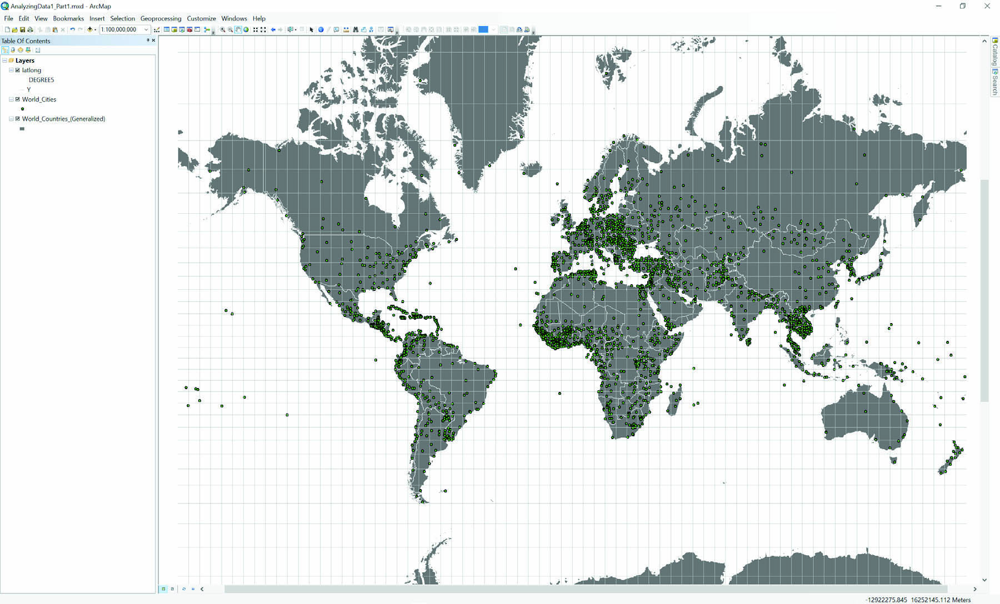Projections in GIS Software
Working with geospatial information in GIS software means working with coordinate systems and, usually, projected data. Before we get started, there are a few software-related concepts to cover.
Recall that GIS data usually contains information about its coordinate system—datum, projection, etc. (In shapefiles, this information is stored in a PRJ file associated with the shapefile.) Knowing the coordinate system of one’s data is essential to working with it appropriately. This information also allows the software to re-project the data “on-the-fly.” In other words, GIS software can use the coordinate system information to re-project multiple different layers into the same projection in the data frame such that they align within the working space of the map project.
On-the-fly projection can be quite beneficial, but is not always as effective as the data frame might make it appear. In instances when the software is re-projecting layers based on different datums (versus different projections based on the same datum), positional errors are more likely to occur. In these cases, a user will usually be met with a warning pop-up which might indicate a need to transform your data (recalculate its positional information from one datum to another).
The ability to project data on-the-fly should suggest to you that the coordinate information of each dataset and the coordinate information of the data frame are conceptually separated in the environment of GIS software. By default, the coordinate system of the data frame is established by the first layer added to a map project.
In our case, the world countries shapefile was the first layer we added to the project. As such, its coordinate system information has been assigned to the data frame. From this point forward, new data layers added to the project would be re-projected to match the coordinate system and projection of the data frame. At any point while working, we can change the coordinate system and/or projection of the data frame, and all layers within the project will be re-projected again to match. Again, this continual on-the-fly re-projection does not alter or transform the underlying coordinate system information of the individual datasets. (To do that, we would need to employ a specific tool that transforms and/or re-projects and exports a new dataset with a different coordinate system.)
Comparing Projections
COORDINATE SYSTEM (AND PROJECTION) OF THE DATASET: The coordinate information of any data layer can be identified in the layer’s Properties dialogue box in ArcMap. Access the World Countries shapefile’s properties dialogue by right-clicking on the layer’s name and choosing Properties. Under the Source tab, you will find its coordinate information.
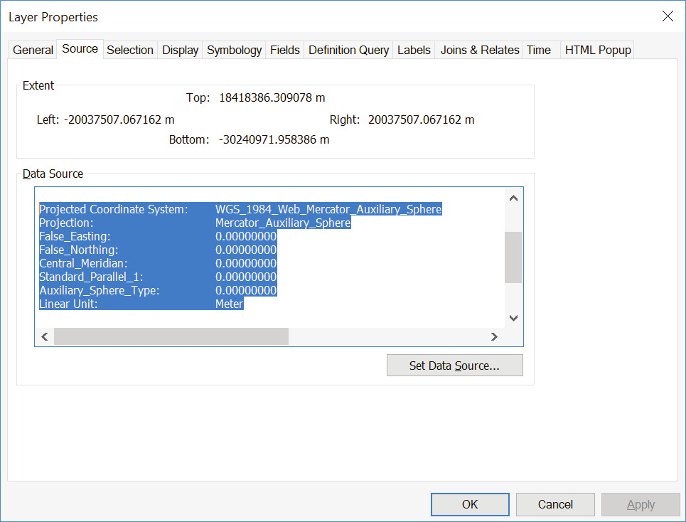World Countries shapefile has a “Geographic Coordinate System” and “Projected Coordinate system” which means that it is associated with coordinates of a specific datum, and a specific projection. Sometimes we may encounter so-called “unprojected” shapefiles – they have an assigned datum, of course, but a specific projection has not been applied to it. As a result, the latitude and longitude coordinates would be plotted in a regular grid.
Projections By Type
Let’s review the primary types and categories of projections. Projections are categorized by two factors: the spatial properties they are designed to preserve and the shape of the projective surface employed to construct them.
By Preserved Spatial Properties
- Conformal projections preserve local angles—thereby also preserving the shape—of features. Maps created with a conformal projection will therefore more or less “look right” when compared to the features on the Earth’s surface.
- Equivalent or equal-area projections preserve the relative areas of features.
- Equidistant projections will preserve the distance between two points on the map.
- Azimuthal projections preserve the direction between two points along a straight line connecting them on the map. On an azimuthal map, that straight line is known as a rhumb line and intersects each parallel and meridian at a constant angle.
By Surface
- Conic projections employ a cone as the projective surface. Maps made with conic projections are characterized by curved parallels and meridians that converge toward the apex of the cone (which is often, but not necessarily, positioned over one of the poles).
- Cylindrical projections employ a cylinder as the projective surface. Basic cylindrical projections (those that have not been further edited to preserve specific spatial properties) are characterized by parallels and meridians that intersect at right angles, neither of which converge or curve.
- Azimuthal or planar projections employ a plane as the projective surface, most closely resembling familiar orthographic projections.
- Cartographers can alter the orientation of the projective surface relative to the reference model of the Earth. Polar and equatorial orientations are pointed toward the poles and equator, respectively. Oblique projections orient the projective surface anywhere between a pole and the equator.
- Where the projective surface is tangent to or intersects the “Earth” (or, more accurately, a reference model of the Earth or a datum) display no scalar distortion on the map. These are referred to as standard parallels or meridians. A simple projection has one standard; a secant projection has two. The further away from a standard, the greater the distortion on the map.
QUESTION 1.1: What are the linear units associated with the projection of the World Cities layer? If we were to measure distances between two points on our map, would this layer’s projection be appropriate for that? Explain why.
CHANGING THE PROJECTION OF THE DATA FRAME: To change the projection of the data frame, right-click anywhere in the data frame and
choose Data Frame Properties. Under the Coordinate System tab, click through “Projected Coordinate Systems > Polar > North Pole Gnomonic”. Once this projection is set, do not change it until the instructions tells you so. Read through the information about this projected system in the lower panel of the dialogue box. There, you’ll find information on the datum and projection of the system. In addition to its name indicating that the projection is gnomonic, you’ll find the location of its standards, the central meridian and latitude of origin, and the linear units of the system. In a gnomonic projection, great circles are mapped to straight lines. This unique property makes easy finding the shortest route between any two points (although not the direction to follow).
Export/Import to/ from Rhino
EXPORT TO CAD: The workflow between ArcMap and CAD software is fairly simple and straightforward. Individual layers can be exported by right- clicking on layer’s name and clicking through “Data > Export to CAD...”
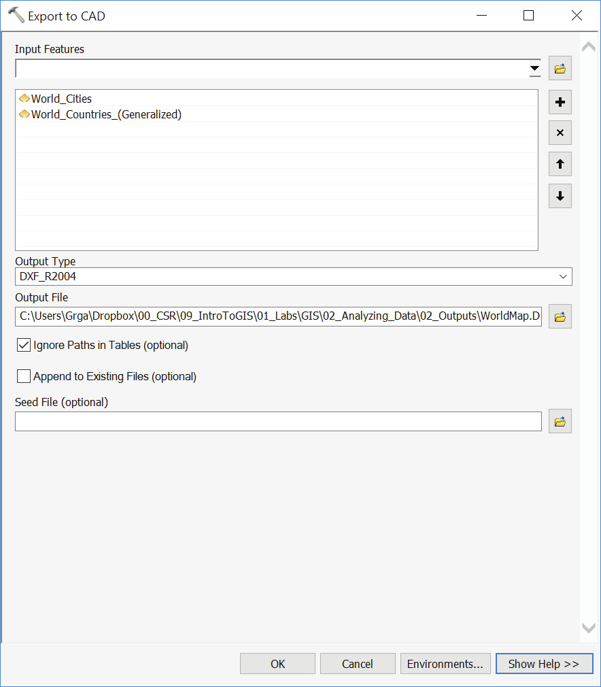We will export World Cities and World Countries. Choose either of the two layers for export, and in the dialogue box, use Input Features drop down menu to add the second layer to the list. Change the output type to “DXF_R2004.” Next, click on the “Environments...” button and choose the “Output Coordinates” tab. Set the Output Coordinate System to “Same as Display.”

Save the dxf file as “WorldMap.dxf” to your working folder. A version of a dxf file will load into your ArcMap scene. Remove it by right-clicking on the layer and choosing “Remove”. DRAW SHORTEST PATHS: The following few steps assume working familiarity with Rhino. Open Rhino and import the dxf file you just created. Make sure dxf is set as the import file type in the dialogue box. Create a new layer in Rhino and call it “Paths.” Using the line tool (make sure “Paths” is the active layer), draw straight-line paths between various world cities.

Because we are drawing straight lines in a Gnomonic projection, these are the shortest paths between any two points. Select all paths by right-clicking layer’s name and choosing “Select Objects.” Type “Rebuild” in the command line and choose 100 points of degree 2. Click through “File > Export Selected” and save file as “shortestPaths.dxf.” Set the export scheme to “2004 Polylines.” QUESTION 1.2: Explain why we chose Output Coordinate System “Same as Display” as opposed to “Same as Input” while exporting data from ArcMap to CAD.
TURN CAD FILE INTO A GEOSPATIAL DATASET (SHAPEFILE)
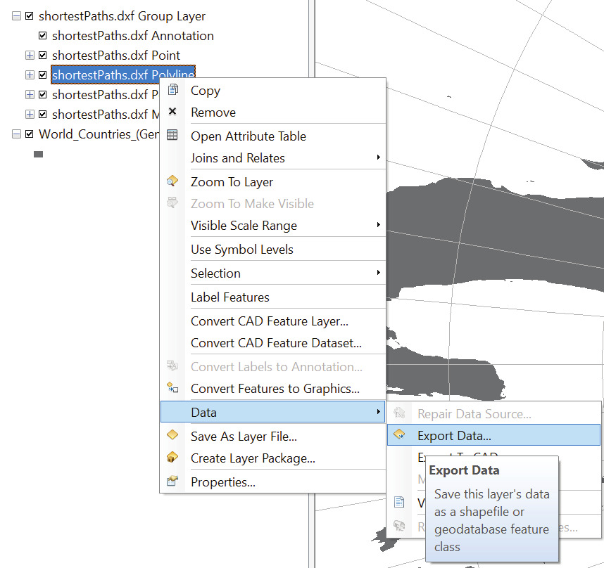Return to ArcMap and click “Add Data...” Navigate to “shortestPaths.dxf” and add it to your map. Ignore warnings about spatial references, if prompted. Drill into the layer and highlight “shortestPaths.dxf Polyline.” Right-click on it and choose “Export Data...” Use the same coordinate system as the data frame. Save the file as “shortestPaths.shp” in a folder of your creation. Click “OK.” You’ve now created a projected shapefile of the shortest paths which will allow us to re-project it “on-the-fly.” Add new shapefile to the scene and remove the dxf file.
SHOW THE MAP IN OTHER PROJECTIONS
Mercator
Right-click anywhere in the data frame and choose “Data Frame Properties...” Under Coordinate System tab, navigate through “Projected Coordinate Systems > World > WGS1984World_Mercator.” Click “OK.” Notice that the paths are now displayed as curves. Navigate to “File > Page and Print Setup” and create a letter size layout in landscape format. In Layout View, resize and position your data frame on the page, zooming and panning to create a world map. Export your map.
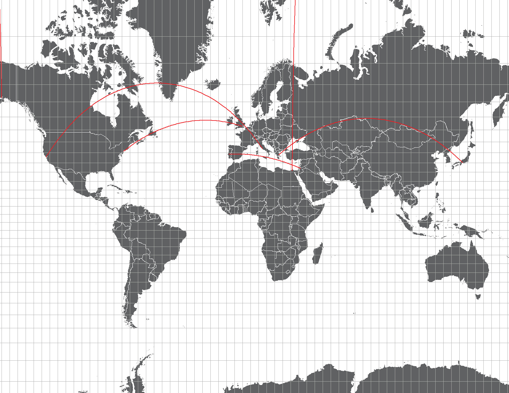Peters
Access the Coordinate Systems tab of the Data Frame Properties again, and navigate through “Projected Coordinate Systems > World > Cylindrical Equal Area (World).” Double-click on the projection to access the Coordinate System Properties. Change the Name to “Peters” and set the Standard Parallel to 45 degrees. Click “OK.” Once you are happy with the layout, export your map.
Robinson
Next, change projection to Robinson by clicking through “Projected Coordinate Systems > World > Robinson (World). Export your map. Finally, explore more projections by choosing them from the World and Polar menus. Choose one and export your map again.
✍️ Assignment and Deliverables. Complete the exercise and answer the embedded questions. Combine four (4) world maps and answers to the questions into a single PDF with the deliverables for the Part 2 of this exercise. You should have completed Mercator, Peters, and Robinson map, and one with the projection of your choice. Make sure the paths are clearly visible in all four maps. Upload your PDF to Canvas before the start of class on the due date.
Part 2 | Geoprocessing, Aggregation, & the Modifiable Areal Unit Problem
Scenario
Welcome back to New York! Since the Bloomberg administration’s Million Tree initiative, large-scale, volunteer-based street tree census data has been intermittently collected in the city. As more trees are planted (and counted), you are interested in examining the overall geographic patterns of the city’s tree cover relative to the city’s population and neighborhoods. Given known relationships between vegetation and quality of life indicators, you are specifically interested in understanding the spatial equity of the city’s street trees and in taking steps, if necessary, to advocate for more tree plantings in underserved neighborhoods. Thus, the primary questions your initial analysis must answer are
- Where are the relatively highest and lowest street tree densities in the city? - And in which City Council Districts are these located? The complete tree census data includes the coordinate locations of each counted tree in the city, and includes over 680,000. With such a high number of trees, variations between neighborhoods are imperceivable if the data is merely mapped as points across the five boroughs. As such, you will need to aggregate the point-level data to appropriate boundaries which raises the secondary questions: Which boundaries are most appropriate for aggregation, and how does this choice change the results of your analysis? You have decided to compare several options because of the advantages of each approach:
- Census blocks should be mapped because they are the smallest spatial unit available and therefore can reveal more granular variation in tree density. Larger areal units would obscure block-by-block differences and would, for example, hinder an analysis of tree density very near truck routes.
- Census tracts should be mapped because they are the only sub-borough spatial unit for which several pertinent demographic variables are available. If you would seek to directly compare household income levels to tree density, for example, you would necessarily need to conduct that comparison at the level of census tracts.
- Similarly, the potential need to compare relevant health data—such as asthma rates—to tree density suggests that the tree census information should be analyzed based on the city’s health area boundaries (by which most health information is aggregated).
- The eventual goals of organizing community leaders toward advocacy, however, suggest that mapping tree density by community district would be beneficial. The outcomes of your analysis may help inform communities and mobilize efforts within the protocols of the city’s public planning process. Confidently answering your primary research question will require calculating tree density levels when aggregated to four different relevant boundaries and comparing the results.
Assignment & Deliverables: Complete the exercise below, answering each of the embedded questions. Answers to the questions should be compiled with the final PDF deliverable of the exercise, and submitted via Canvas.
There are no map deliverables from this exercise. Rather, the scenario describes preliminary research questions—evaluating the impacts of choosing specific areal units as the basis for analysis. Still, several analytical maps will be generated (although they will not be exported from the GIS software).
The data needed for this exercise include a table of tree-level (unaggregated) data from the 2015 Street Tree Census as well as boundary shapefiles for each of the five spatial units described in the scenario. STREET TREE CENSUS: The 2015 street tree census data is publicly available and was downloaded from the city’s open data portal at https://data.cityofnewyork.us/Environment/2015-Street-Tree-Census- Tree-Data/uvpi-gqnh. The table is provided in the “\02AnalyzingData1\00DATA\tables\” folder and is named “2015StreetTreeCensusTreeData.csv.” A “Data Dictionary” PDF is also downloadable from that website and decodes the field name variables within the table. The Data Dictionary is provided with this exercise in the “\02 AnalyzingData1\00DATA\docs\” folder. BOUNDARY LAYERS: Shapefile boundary layers for the census blocks, health areas, community districts, and city council districts are provided in the “02AnalyzingData1\vector\” folder. They were downloaded from the NYC Department of City Planning’s Bytes of the Big Apple website. In each case, the boundaries downloaded were prepared by clipping the polygonal areas to the city’s shoreline. In other words, administrative boundaries that technically extend into the waterways are represented as ending at the water’s edge. Also available on the website is detailed metadata including, among other things, version and updating information. The download page is here: http://www1.nyc.gov/site/planning/data-maps/open-data/districts- download-metadata.page. (Note that census tract boundaries were not downloaded for this exercise. We will create our own.)
QUESTION 2.1: Follow the links to the two websites where the five data sets were downloaded. Using the information there, write complete bibliographic citations for each data set.
Approach
Typically, one would plan an analysis concurrent with collecting the data necessary to conduct a GIS-based analysis. In an iterative process, one would consider the data available and questions to be answered—collecting data sets from reliable sources with useful attributes and appropriate units (spatial units, temporal units, and quantitative units), designing an analysis that might address the research questions, then searching for other data if such an analysis cannot be completed with the data collected, and so on.
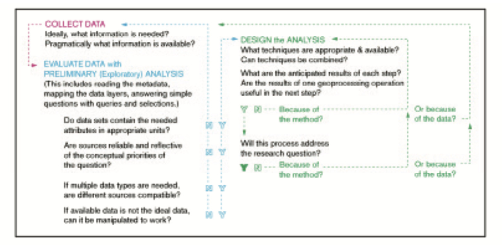Of course, for now, these steps have already been planned and decided for you. Still, as we begin to develop more complex spatial analyses, there are a couple considerations worthy of note: Taking the time to plan the analysis is conceptually necessary to ensure that the result answers the research question appropriately and without introducing unnecessary or careless errors. Most analyses involve several geoprocessing steps, the order of which will affect the results. It is important, therefore, to not only think about the techniques we will use but also to anticipate the results of each step and how those results will be incorporated into subsequent processes. Taking the time to plan the analysis is also pragmatically advantageous because it can, in the long run, save you considerable processing time. In other words, not only can detailed pre-planning save you time by ensuring that the analysis is run properly the first time, but it also gives you the opportunity to think through the most efficient route from question to answer. Geoprocessing operations can be time-consuming, especially if datasets are large (many features) and/or your hardware is slow. Consider that for each process, the machine must not only run mathematical operations on attribute data but must first evaluate the geometric relationships between features in multiple layers. This “waiting” is part of working with GIS. Being smart about your process and your time is also part of working with GIS. For example: In this exercise, our first spatial join will take a long time to execute. Although we will need to aggregate the street tree points to several different boundaries for comparative purposes, we can plan ahead by first aggregating to the smallest geographic unit (census blocks) and then aggregating this new dataset (street trees per census block) to the larger boundary units. Pragmatically, this will save us computation time because our census block layers only include a few thousand features whereas the street tree layer includes hundreds of thousands of features. Conceptually, we can confidently aggregate our block-level data (once we create it) because we know that these blocks are perfectly nested within the other geographic units in our analysis—that is, blocks do not cross the boundary lines of the other geographic units. In order to answer the questions established in the scenario, the steps we will take are summarized in the process diagram below. Layers (tables and feature classes) represented in blue are those we have collected and will prepare (in the Setting Up section) for our analysis. Those represented in black will be created as steps in the process. Process diagrams (such as the examples in this exercise) are both conceptually and communicatively valuable graphic tools: they can help you organize the process of a multi-step analysis and explain those steps to multiple audiences later.
In short, the process plan is this:
- We will map the coordinates of trees based on the X,Y coordinates in the table and create a point feature class of street trees.
- We will then spatial join the tree points to census blocks—counting the total number of street trees per block as a function of the spatial join—creating a polygon feature classes of street trees per block.
- We will then perform three more spatial joins, each time aggregating the number of trees per block to different larger boundaries: once to health area boundaries, once to community district boundaries, and once to city council boundaries. With the spatial join, we will calculate the sum of the number of trees per block to determine the number of street trees per boundary type.
- We will also dissolve the street trees per block by the census tract field in the block- level attribute table. As a function of the dissolve operation, we will calculate the sum of the number of trees per block to determine the number of street trees per census tract.
Note that the diagram is incomplete. It does not detail, for example, where we will need to add and calculate new fields. It does not include, as well, a few steps we will need to take in order to perform some of the spatial joins. Launch ArcMap and start a new, blank project. Immediately save the project file as AnalyzingData1Part2.mxd in the “\01AnalyzingData1\01_ProjectFiles\” folder. Add the census blocks, city council districts, health areas, and community districts polygon shapefiles to your ArcMap project. Save your ArcMap project.
CHECKING COORDINATE SYSTEMS
Given that geoprocessing and spatial analysis require that any geographic overlaps we see are indeed representative of the information in each data later, we must first confirm and/or ensure that the coordinates in each layer are based on the same datum and are projected. Because our area of analysis is New York City, we will use the North American Datum of 1983 (NAD83) State Plane coordinate system, and the New York Long Island zone (projected in US Feet) specifically. Check the coordinate systems of each polygon boundary layer by accessing the Layer Properties (coordinate system information is described under the Source tab). Save your ArcMap project.
QUESTION 2.2: Which boundary layers are not already represented within the NAD83 State Plane New York Long Island (Feet) coordinate system? What is/are their coordinate system(s)? (Be sure to include datum and projection information.)
Navigate to menu item “Geoprocessing > ArcToolbox.” Click through “Data Management Tools > Projections and Transformations > Project.” Use the Project tool to create new feature class(es) with the NAD83 State Plane New York Long Island (Feet) coordinate system and save it in “02_MyShapes” folder. After exporting, add these new feature class(es) to your ArcMap project and remove the original shapefile(s).
PLOTTING X,Y COORDINATE POINTS
Add the tree census data table to your ArcMap project. We know from the data dictionary, that the table includes four fields with coordinate information per tree. Two fields include latitude and longitude coordinate pairs in decimal degrees in the geographic World Geodetic System of 1984 (WGS84) coordinate system. Two fields include x and y coordinates in feet based on the NAD83 NY-Long Island State Plane coordinate system. We could use either of these pairs to plot the point locations of the trees. However, because we plan to conduct our analysis in the NAD83 State Plane system, we will take advantage of the convenience of the latter two fields.

Consult the Data Dictionary and the table to confirm the xsp and ysp fields are both present and appear to include the longitude and latitude coordinates in feet.
To plot the points at the locations described in the table, right-click the layer’s name in the ToC and choose Display XY Data. In the resulting dialogue box, select xsp and ysp as the fields containing values for the X and Y coordinates respectively.
Consult the Data Dictionary and the table to confirm the xsp and ysp fields are both present and appear to include the longitude and latitude coordinates in feet. To plot the points at the locations described in the table, right-click the layer’s name in the ToC and choose Display XY Data. In the resulting dialogue box, select xsp and ysp as the fields containing values for the X and Y coordinates respectively. Of course, the software cannot guess the coordinate system in which these X,Y coordinate values were determined. Instead, a user must specify the appropriate coordinate system by clicking the Edit button under the “Coordinate System of Input Coordinates” section. This will open the Spatial Reference Properties dialogue box. There, navigate to and select the NAD83 State Plane New York Long Island (Feet) system. Click OK in the Spatial Reference Properties dialogue; you should see the correct coordinate system information in the Display XY Data dialogue box.
 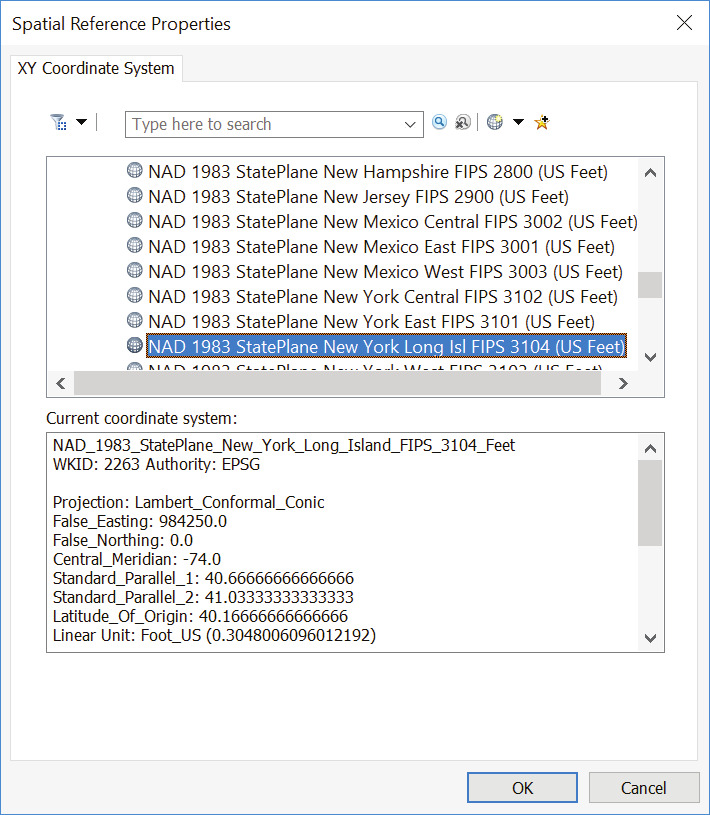
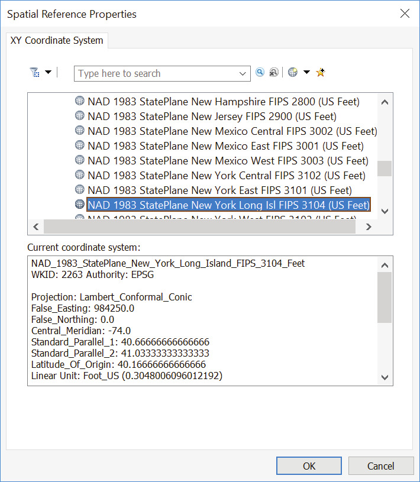
When you are ready to proceed, click OK in the Display XY Data button.

The results will appear in the data frame. Notice that the new layer is labeled as “Events,” and recall that the Display XY Data dialogue box did not ask where to save the point file or what to name it. This is because the Display XY function within ArcMap does not produce a new data file, and an event layer is not a feature class. It is only a visualization of a dataset. In this case, it is a visualization of the street tree census table.
Export the event layer as a new point feature class in our AnalyzingData1 “02MyShapes” folder, just as you would export a new feature class from another layer within an ArcMap project (right-click on the event layer name in the ToC and click through Data > Export Data). Use the projectin of the data frame. Name the new, exported feature class StreetTreeCensus2015_Points. Add the feature class to your ArcMap project, and remove the events layer and the original data table.
Confirm the coordinate system of the new point feature class. Save your ArcMap project.
Spatial Joins allow us to describe, summarize, and manipulate the attribute data from one layer based on its geographic inclusion (containment and/or intersection) within the features of another layer. The result is an output feature class with the spatial features and attributes of the target layer and new attributes based on the features joined to it. Because spatial joins are rarely based on one-to-one relationships between features of different layers, we will usually summarize quantitative data fields—calculating the sum or mean values, for example, of the features that are aggregated. Non-numeric fields cannot be summarized and, thus, are not included in the output attributes. The most straightforward spatial join is a point-to-polygon analysis wherein point features that intersect polygon features are aggregated with respect to the polygon boundaries. In this case, the target features are those of the polygon layer.
PERFORMING A POINT-TO-POLYGON SPATIAL JOIN
All joins have direction. As with table joins, we initiate the spatial join on the layer to which we are joining data. In this case, you are joining the street tree point locations to the census block polygons. Access the Join Data dialogue by right-clicking on the census block feature class layer name in the ToC and clicking through “Joins and Relates > Join.” In the Join Data dialogue box, specify that you intend to “join data from another layer based on spatial location” in the initial drop-down menu. You should notice that the options immediately change to reflect the properties of a spatial join. As before, take a moment to read through the questions (and their possible answers) within the dialogue box. Again, the settings and parameters of the spatial join should be clear to you (based on your designed method) prior to initiating the join. In response to the first question, specify that you will join data from the street tree points layer to this layer’s census block boundaries.

Once the first question is answered, the options for the second question are updated reflecting the geometry of the joining layers. In this case, we are joining points to polygons, and two potential join “types” (i.e., two different ways the attribute data is handled based on points’ intersections with polygons) are presented. By default, the first option is selected: summarizing numeric attributes of the points that fall inside each polygon as well as counting the number of points per polygon. For this step of our analysis, we do not need any summary statistics of numeric attributes. We only need the count of street trees per census block. (Take a moment to read through the other options.) In the third question, specify that the output shapefile should be saved in your “02_ MyShapes” folder and name it “StreetTrees_ perBlock.shp.” Unlike a table join, the results of a spatial join are always exported as a new feature class.

NOTE: Again, that this spatial join could take a very long time to execute. Consider the computational processes involved and the hardware you are using. Confirm that you are not attempting to perform this spatial join with data linked to a (small) external drive. TIP: Confirm that you are taking advantage of multiple processing “cores” on your computer, if available. In ArcGIS, you can instruct the software to employ “parallel processing” (using multiple CPU cores when available) by clicking through Geoprocessing (on the Main Menu) > Environments, then specifying “100%” as the Parallel Processing Factor. When you are ready, click OK in the Join Data dialogue box.
When the join is completed, open the attribute table of the newly created polygon feature class. Based on the options we specified, we expect to see the fields from the original census block shapefile as well as a new Count field representing the number of street trees per block. Confirm these results in the attribute table.
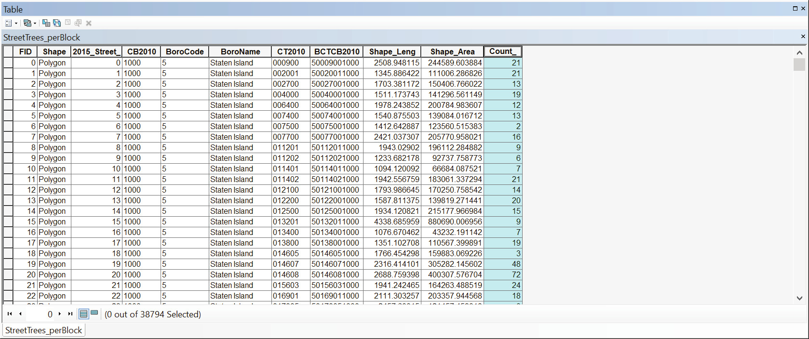Symbolize the number of trees per block (based on the Count field), using a graduated color scheme.
NOTE: You will likely encounter a warning message under the Symbology tab in the Layer Properties dialogue box, explaining that the census block feature class exceeds the (default) maximum sample size and that not all features are included in the classification. The default sample size here is limited to reduce processing time.

To change the maximum sample size, click the Classify button to open the Classification dialogue and click Sampling. There, you can increase the maximum sample size—it is probably simplest to just add a few zeros to the end of the default value. When you are finished, click OK in the Data Sampling dialogue to save your changes and finish symbolizing the new data layer.
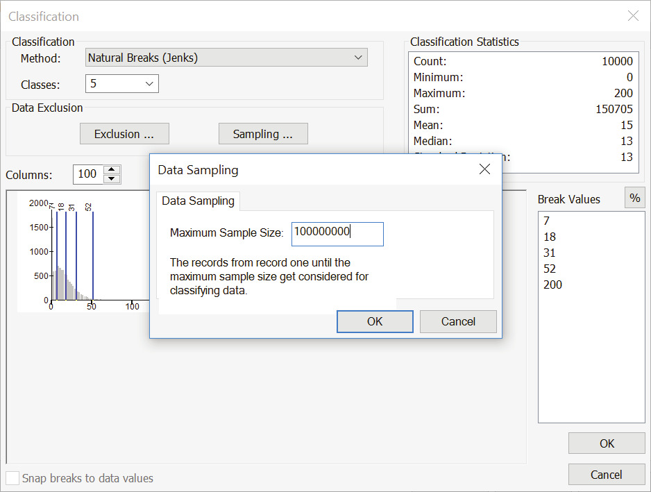The image (right) depicts the street trees per block along with the health area boundaries.
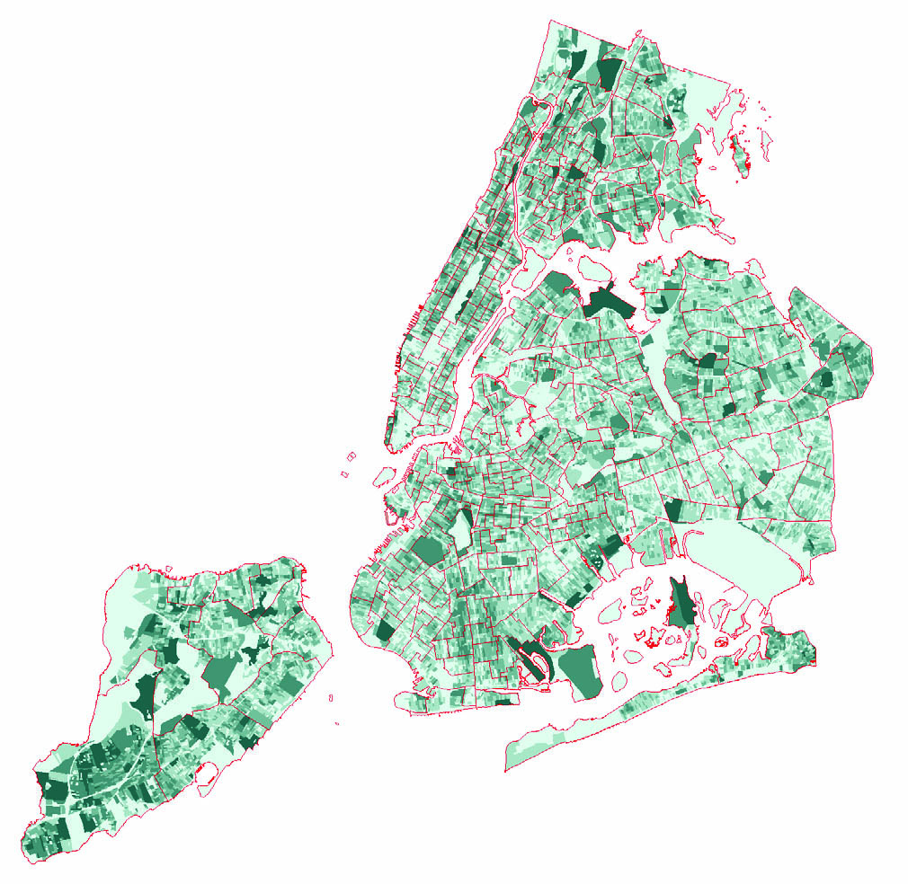Save your ArcMap project.
PERFORMING POLYGON-TO-POLYGON SPATIAL JOINS
Referring to the process diagram we established for the steps of this analysis: now that we have a block-level feature class with attributes that include the number of street trees per block, we can aggregate those blocks to several larger boundaries and compare results. We will first perform a spatial join aggregating the trees per block data to the city’s health area boundaries, and then repeat the process for community districts. Initiate a spatial join on the health area boundary layer by right-clicking on its name in the and clicking through “Joins and Relates > Join.” In the Join Data dialogue box, specify that you would like to Join Data from Another Layer Based on Spatial Location. From the drop-down menu, specify that you would like to join the data from the StreetTreesperBlock layer. Notice that the text in the second question has updated to reflect joining Polygons to Polygons. Read through the text carefully. Notice that the spatial relationships being tested in the first option is the intersection between polygons, without alternative relationships offered. This means that all blocks that intersect the health areas will be aggregated when the spatial join is executed. We should investigate the implications of the intersection requirement before continuing. Close the Join Data dialogue box. Interactively select a single health area, then select all the blocks intersecting it using the Select by Location function. You should notice that several census blocks outside the health area are selected. This is because collocated arcs or edges technically intersect one another, even if the internal polygon areas do not overlap. Clearly, we cannot include the blocks that sit outside each health area in our aggregation. Instead, we will use/learn another geoprocessing tool to address this problem by creating a new feature class at the centroid of each census block which maintains the StreetTreesperBlock attribute data. Open the Feature to Point tool by searching for “Feature to Point” in the Search panel. In the Feature to Point dialogue box, specify the StreetTreesPerBlock layer as the input features and save the output feature class in the “02MyShapes” as StreetTreesperBlockPoints. shp.” Check the option to keep the points created on the “Inside” of existing polygons (in the event that the centroid sits outside a polygon’s boundaries). Click “OK” to run the tool.

QUESTION 2.3: Despite the ability to create point layers from polygon vectors, it is still necessary to know that the census block geographies are nested within the health areas and community districts. Why? (Hint: Given that we created points that are definitively within each polygon, the nested relationship is not significant for the intersection.)
Once again, open the Join Data dialogue box by right-clicking on the health area boundary layer in the ToC and clicking through “Joins and Relates > Join.”
In the Join Data dialogue, specify that the StreetTreesperBlockPoints layer will be joined to the health area boundaries and that along with the Count field (which will represent the number of blocks within each health area), we need to calculate the sum of the numeric attributes in order to find the sum of the number of trees per block (which is represented by the StreetTreesperBlock “Count” field. Name the output feature class “StreetTrees perHealthArea.shp” and save it in the “MyShapes.”
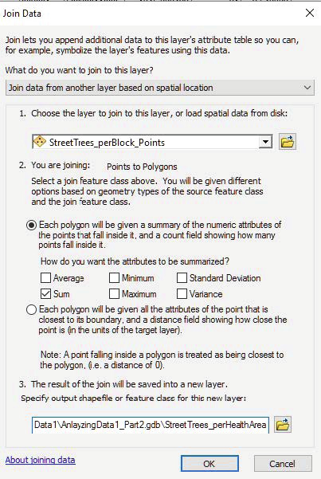When you are ready to proceed, click OK to execute the spatial join. (You should notice that the join executes much faster than the first one.) Examine the results by opening the new attribute table. You’ll notice that, as anticipated, we now have a new “Count” field with the number of features aggregated per health area (blocks) as well as the sum of each previous numeric field. The Sum_ Count_ field includes the sum of the block-level layer’s “count” field, which represented the number of street trees per block.

TIP: To avoid confusion, it is good practice to (a) take careful notes and (b) annotate the meaning of each of these automatically labeled fields within the attribute table whenever possible. You can change the field header’s label (although you cannot change the field name permanently) by giving the field an “alias” in the Field Properties dialogue box (Right-click on field name and choose “Field Properties.” You should also notice that several SUM fields don’t really mean anything. Rather, they are the result of adding numeric values which originally served categorical or qualitative purposes. You can delete them or turn them off to stay organized. NOTE that fields that are “off” will be excluded from a new attribute table if the layer is exported to a new feature class.
Repeat this step once more— joining the Street Trees per Block point feature class to the Community District boundaries, each time calculating the sum of the numeric fields. Name them “StreetTrees_perCD.shp.”
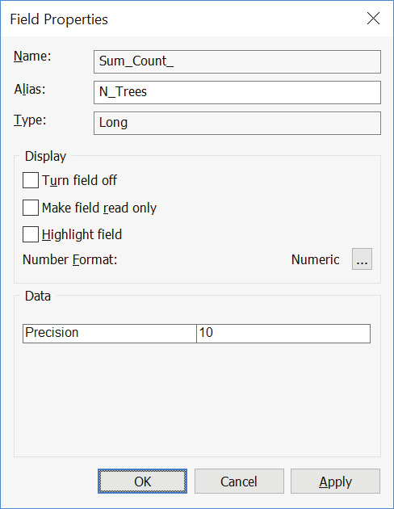TIP: Take your time. Be sure to check the drop-down menu in the Spatial Join dialogue box. The choice you made from that menu is not automatically selected the next time you access the dialogue. Turn off or remove the original boundary files from your ArcMap project to stay organized. Assign field aliases within your new attribute tables if it helps you. Save your ArcMap project. We will be comparing the density of street trees per boundary, but for now, here are the trees per boundary area for each of the boundary types, mapped in quintiles. While there are areas of the city that are consistently represented, there also neighborhoods that appear in the bottom 20% and the top 20% depending where the boundary lines are drawn.
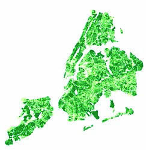 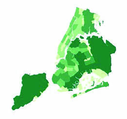
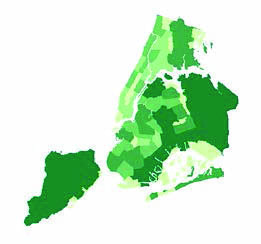
Aggregating Data by Dissolving
To find the number of street trees per census tract, we could perform a spatial join of the original tree census data to census tract boundaries or join the block-level tree counts to these boundaries, as we did above. Instead, because our Street Trees per Block layer includes census tract FIPS codes within its attribute table, we will use these codes to produce a new feature class that dissolves the block-level data to tracts based on this field. The result will aggregate features (both the geographies and the attributes) with the same tract number.

Open the StreetTrees_perBlock attribute table and notice the CT2010 field (census tract FIPS codes, from the 2010 vintage). We will use this field as the basis of our dissolve operation.
Open the Dissolve tool dialogue box (in the ArcToolbox panel) by clicking through the “Data Management Tools toolbox > Generalization > Dissolve” (double-click the tool name to open its dialogue).
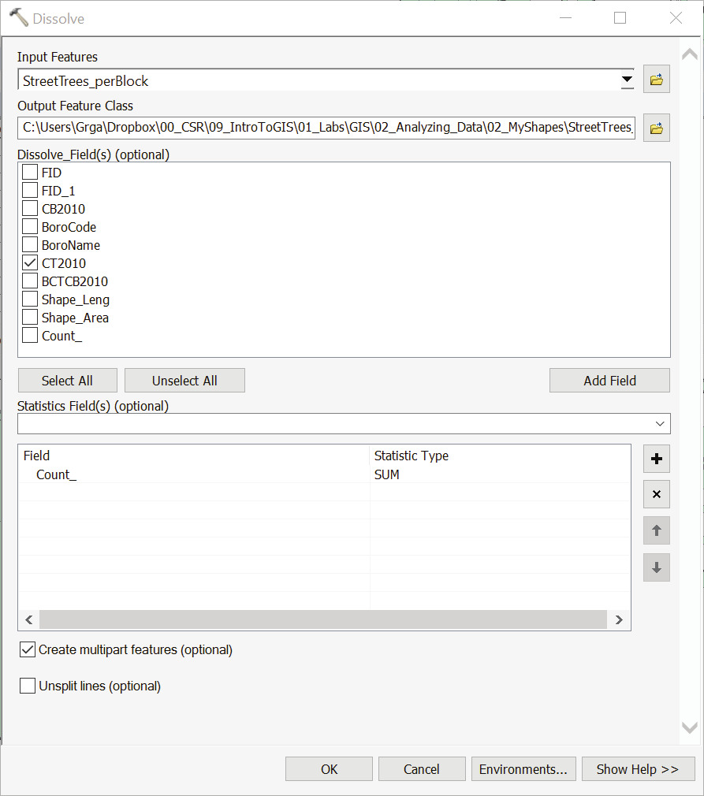The Dissolve tool dialogue will appear. Read through the options, using the Tool Help panel where necessary. Specify the StreetTreesperBlock layer as the input features. Save the output feature class as “StreetTreesperTract.shp” Specify the CT2010 field in the attribute table as the “dissolve field” so the polygon features with the same value in this field will be aggregated (i.e., “dissolved”) together. Unlike aggregating via spatial join, the dissolve operation allows us to specify which fields in the input attribute table to summarize as well as which summary statistic to calculate. This is convenient because we are only interested in summarizing one field: the number of trees per block.
In the Statistics Field drop-down menu, choose the attribute field representing the number of street trees per block. In the screenshot above, it is labeled “Count_” although you may have renamed the field with an alias. You’ll notice the field is added to a list at the bottom of the dialogue box with an error notification alongside it. This is because the tool cannot run until a Statistic Type is specified for each statistic field. Click in the empty space under “Statistic Type,” and next to the Count field’s name in this list to access a drop-down menu of summary statistic options. There, choose that you want to calculate the Sum of this field. Specify that you want to create multipart features. When you are ready to execute the Dissolve operation, click “OK.” Examine the output feature class representing the number of street trees per census tract. The maps below illustrate the number of trees per block and per census tract, represented in quintiles. Again, there are areas where the relative number of trees is consistent at both scales, but there are also neighborhoods that appear in the lower quintile in one map and in the upper quintiles in the other.
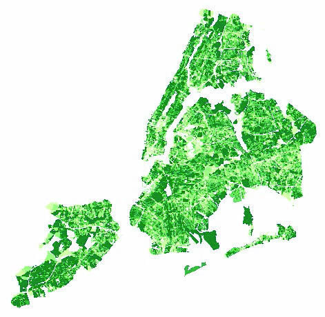
For each of the four boundaries, we need to calculate tree density across the city because calculating density (trees per unit area) will normalize our values to account for the different polygon sizes.
Calculating Tree Density
For each—street trees per census block, census tract, health area, and community district— we’ll need to first add a new field in the attribute table to calculate area (in acres), then add another field to calculate trees per acre (number of trees per polygon feature divided by the area calculated per polygon feature). Your results, when mapped should resemble the collection of maps below (again, these are represented in quintiles).
CALCULATING AREA
Add a new field to the each of the four shapefile attribute table. Name the field “Area_Acre” and specify a Double numeric data type.
 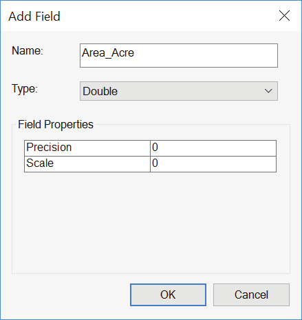
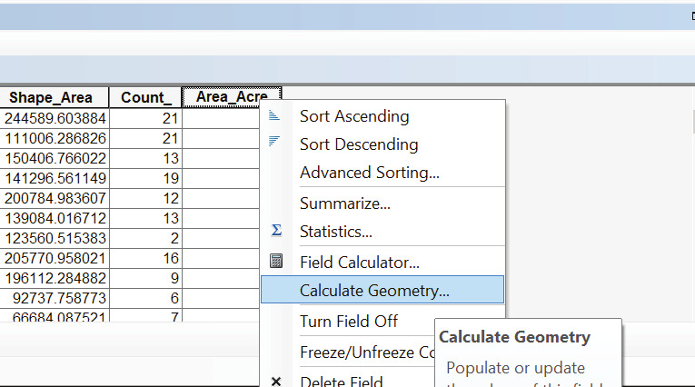
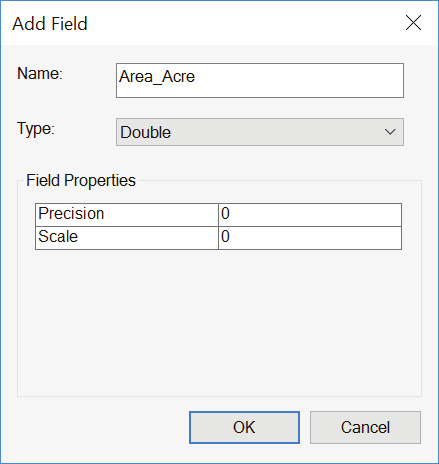
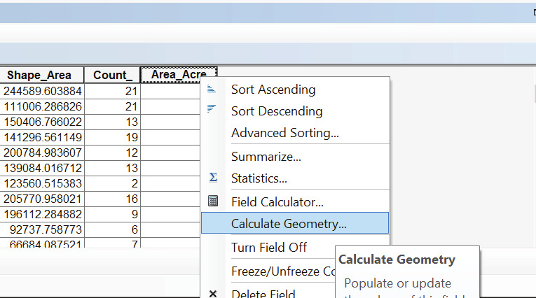
To calculate the area of the field, right-click on the header of the new field and choose “Calculate Geometry.” The Calculate Geometry dialogue box will appear. Take a moment to read through the options. Notice that we can calculate various spatial properties. Specify that you would like to calculate the area of each feature using the coordinate system of the data frame in acres. Click “OK.” The Area_Acre field in attribute table will automatically be populated with the area of each polygon feature in acres. Repeat this process with three other layers.
CALCULATE TREES PER ACRE
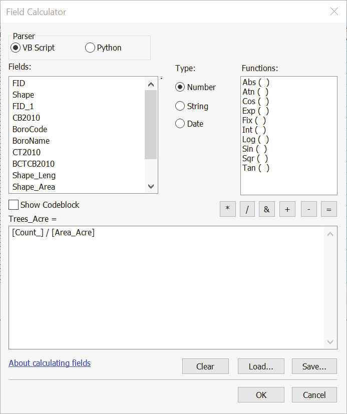Add a new field to the each of the four shapefile attribute table. Name the field “TreesArcre” and specify a Double numeric data type. To calculate trees per acre, we will use the Field Calculator. Right-click in the TreesAcre field header and choose “Field Calculator.”
In the Field Calculator, click the list of field names (double-click) and operator buttons (single-click) to replicate the following expression for the value of the TreesAcre field: [Count] / [Area_Acre]. When you are ready, click “OK.”
Repeat this process with three other layers. Your results, when mapped should resemble the collection of maps below (again, these are represented in quintiles).


EXAMINING OUR RESULTS & ANSWERING OUR RESEARCH QUESTIONS
Quickly visualizing the results of our density calculations—i.e., producing analytical maps for our research process—reveals a few findings worth noting. First, mapping the density of trees (rather than the number of trees) per geographic boundary does help considerably in reconciling the differences between some of the boundaries. Many parts of the city where we saw substantial differences in the relative number of trees now appear more similar. That said, there are still several neighborhoods that could just as easily be described as below- average or above-average with respect to the density of street trees per acre, depending on the unit of aggregation. Take a moment to investigate and examine your results. Consider the purpose of each boundary type described in the scenario. ”
QUESTION 2.4: Using a series of selections as well as summary statistics, fill in the values in the table below for areas with street trees—i.e., exclude null values (To quickly access the summary statistics of the tree density fields, right-click in the field’s header and choose “Statistics...”). For your use, add the city council districts boundary layer to your map project.
| Per aggregation unit, answer the questions below | Census Block | Census Tract | Health Area |
|---|---|---|---|
| What is the minimum street tree density found in the city? In which city council district(s) and borough is it located? | |||
| What is the maximum street tree density found in the city? In which city council district(s) is it located? | |||
| What is the mean street tree density found by spatial unit across the city? |
Clearly, simply locating the blocks, tracts, health areas, or community districts with the lowest street tree density is not a clear indication of where more street trees might be needed. For example, communities may not need several street trees within airports or if their neighborhoods include large parks (“park trees” are not “street trees”).
QUESTION 2.5: Based on your analysis and your calculations of street tree density, which City Council District is most in-need of more investment vis-à-vis more street trees? Briefly, explain why. You may support your answer with calculations or screenshots of analytical maps, or other concise and informal means as you see fit. (Keep in mind, you can always refer to data sets from previous exercises. Please also note that answering this question does not require a thematic map. If you include images, they can be informal.)